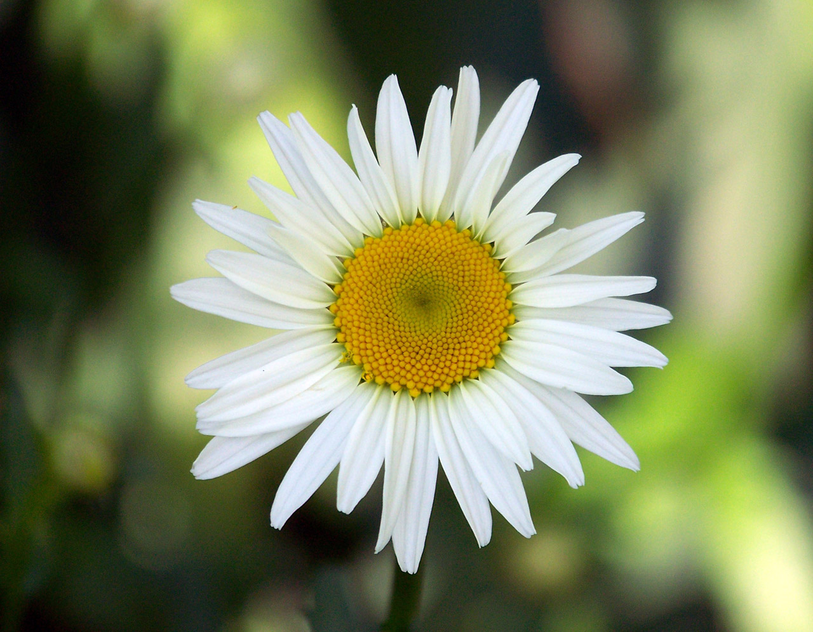

Daisy
Daisies are cheerful, daisy-like flowers belonging to the Asteraceae family. They are popular for their simple yet charming appearance and are often associated with innocence and purity. Here's a comprehensive guide on daisies, including their types, planting procedure, and care.
Types of Daisy:
- Common Daisy (Bellis perennis): Small, low-growing daisies with white or pink petals and yellow centers.
- Oxeye Daisy: Larger daisies with white petals and yellow centers, often found in meadows and fields.
- Shasta Daisy : Hybrid daisies with large, showy flowers and white petals surrounding a yellow center. They are popular in gardens and landscapes.
- Planting Procedure:
- Spring or Fall: Daisies can be planted in either spring or fall. Spring planting allows them to establish before the heat of summer, while fall planting gives them a head start for the following year.
- Sunlight: Daisies prefer full sun but can tolerate partial shade, especially in hotter climates.
- Soil: Choose well-draining soil with a pH between 6.0 and 7.0. Daisies can tolerate a wide range of soil types but prefer fertile, loamy
Weather in Kathmandu
Temperature: °C
Humidity: %
Condition:
Date & Time: